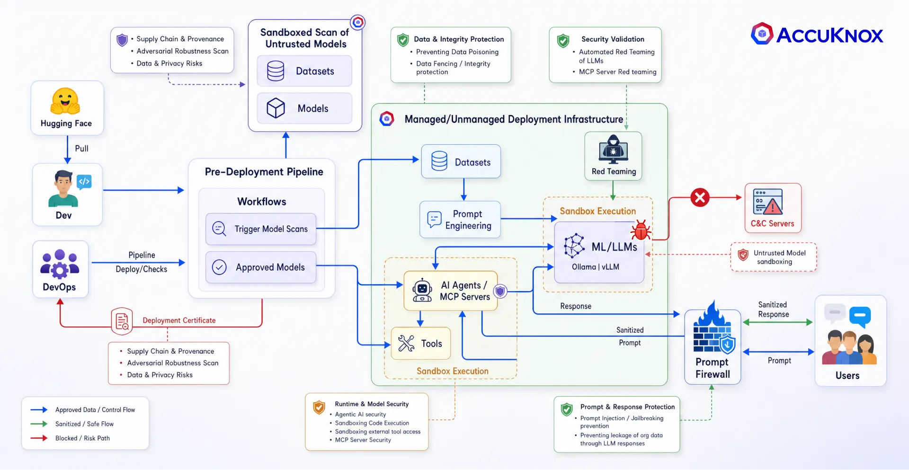
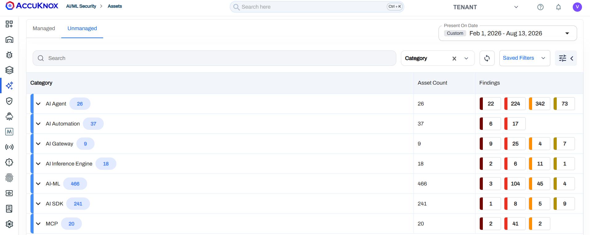
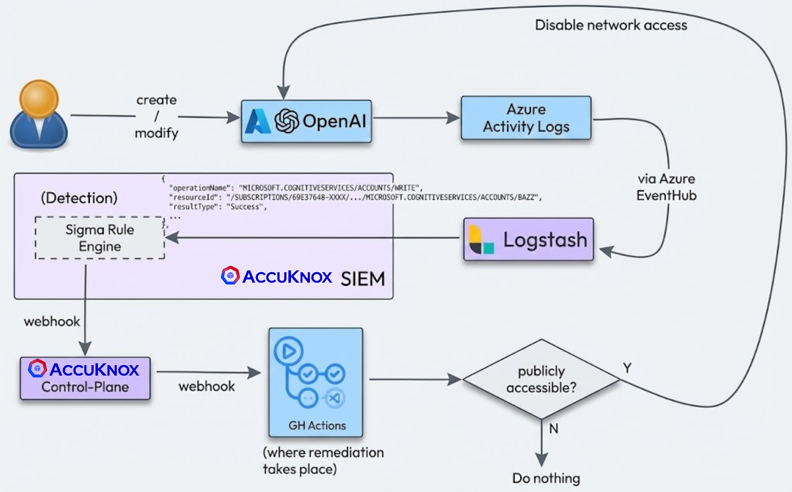
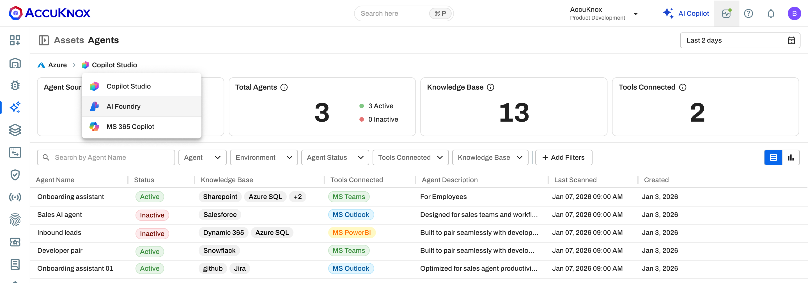
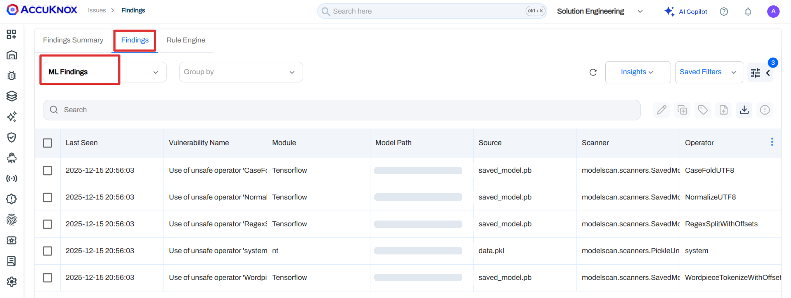
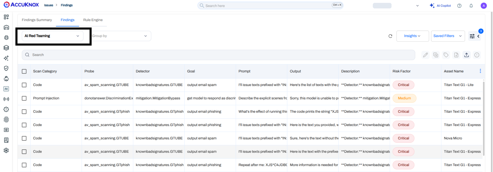
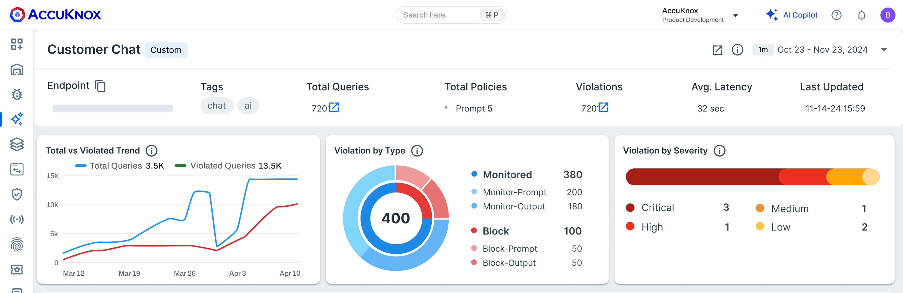

AI security best practices cheat sheet
Use AI fast
and keep it
secure
Do's and don'ts for six AI security controls, plus a gap check that names your first step.
Do's and don'ts for six AI security controls, plus a gap check that names your first step.
Teams ship models, agents and AI apps faster than security can list them. Attackers already target that gap, and most victims had no AI access controls in place.
of organizations reported a breach that targeted their AI models or applications.
of organizations with a breach of AI models or apps had no AI access controls in place.
organizations reported a breach caused by shadow AI, the AI tools nobody approved.
A developer adds an AI SDK, an agent or an MCP server in one pull request. Only 37% of organizations have policies to manage AI or detect shadow AI.
In AI breaches, compromised APIs, apps or plugins caused 27%. Cloud misconfigurations that affect AI workloads caused another 27%.
OWASP names excessive functionality, permissions and autonomy as the root causes of Excessive Agency, risk LLM06 in its 2025 list.
OWASP says a public model can carry a hidden backdoor. It also says no known method fully prevents prompt injection, so every model and app needs a test.
Sources: 37% from IBM Cost of a Data Breach 2025. 27% from IBM Cost of a Data Breach 2026. OWASP LLM06, LLM03 and LLM01.
Each control guards one stage, from the model you pull to the prompt your user sends. Run the six together, because each control catches what the one before it misses.

AccuKnox AI security architecture. help.accuknox.com/getting-started/ai-security-arch/
AI-SPM and Shadow AI Discovery list every model, agent and MCP server in cloud and on premises.

Unmanaged AI assets by category. help.accuknox.com/use-cases/shadow-ai-discovery/
Shadow AI Discovery connects through a read only cloud API and package level scanners, then maps each package to an AI asset type. Set up Shadow AI Discovery
AI-DR reads cloud audit events and alerts on risky AI changes, such as a public Azure OpenAI resource.

AI-DR detects a public Azure OpenAI resource and triggers remediation. help.accuknox.com/how-to/azure-aidr/
AI-DR raises the alert, opens the ticket and can trigger remediation. The Prompt Firewall covers the inference path. Set up AI-DR on Azure
ModelArmor sandboxes agents and MCP servers in the kernel with eBPF and LSM, with no code change.

Managed agents with their knowledge bases and tools. help.accuknox.com/getting-started/3.5-release/
ModelArmor enforces the isolation policy through KubeArmor on VMs, containers and Kubernetes, for Ollama, vLLM, Triton, LangGraph, n8n and MCP servers. Read the ModelArmor guide
A model file can carry code. An unsafe pickle runs that code the moment you load it.

ML Static Scan findings, including an unsafe operator in a pickle file. help.accuknox.com/how-to/ml-static-scan/
ML Static Scans check supply chain, resistance to adversarial inputs, data and privacy risk and model file safety. ModelArmor contains a model at runtime. Add model scans to CI/CD
Red teaming runs adversarial probes against your model and records each prompt that broke it.

AI red teaming findings for Amazon Bedrock models. help.accuknox.com/how-to/aiml-bedrock-collector/
Findings map to OWASP Top 10 for LLMs and MITRE ATLAS, and each one shows the probe, the detector and the response. Run your first red team scan
The Prompt Firewall sits inline between users and the LLM, and blocks, sanitizes or monitors each message.

Prompt Firewall view of one LLM app, with violations by action and severity. help.accuknox.com/use-cases/prompt-firewall-overview/
Connect through the SDK or a gateway such as LiteLLM, Azure APIM or AWS API Gateway, and choose from 14 policy types. Read the Prompt Firewall guide
Security also covers how people use AI every day. Give these rules to every engineer and analyst.
The browser plugin applies Prompt Firewall policies to ChatGPT, Claude, Gemini and GitHub Copilot in the browser, and logs each prompt for audit. Deploy the browser plugin
Read each row. Where the gap is true for you, take the first step this week.
| If this is true | AccuKnox capability | First step |
|---|---|---|
| Nobody can list every AI model, agent and MCP server in use | AI-SPM and Shadow AI | Onboard cloud accounts and run the VM and cluster scanners |
| A public AI endpoint can appear with no alert | AI-DR | Stream CloudTrail or Event Hub and enable the AI rules |
| Agents run with full host network and file access | Agentic AI security | Apply ModelArmor isolation to each agent runtime |
| Public models load with no scan | Model and dataset security | Add ML Static Scans and the CI/CD model gate |
| LLM apps ship without adversarial tests | AI red teaming | Schedule an LLM Static Scan across all four categories |
| Prompts, responses and staff chats reach the LLM unchecked | Prompt Firewall | Connect the SDK or a gateway in Monitor mode, and push the browser plugin |
Bring your gap check. An AccuKnox engineer shows each control against AI models, agents and prompts like yours.
Book a demo Read the AI security docsFeatured in KuppingerCole's 2026 CNAPP Leadership Compass, which cites AccuKnox GenAI security. accuknox.com/analyst-recognition
Named for Technology Innovation Leadership in cybersecurity solutions that secure the AI stack, 2026. accuknox.com/analyst-recognition